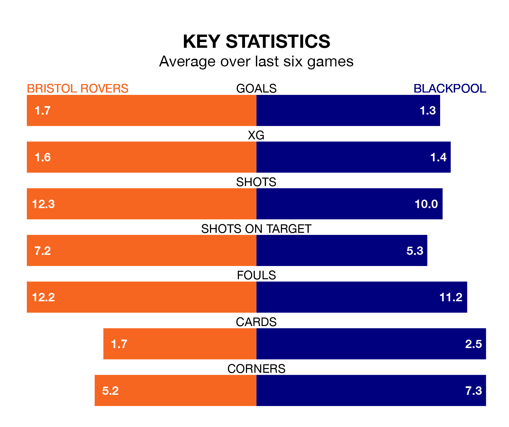

Bristol Rovers host Blackpool on Saturday at the Memorial Stadium in EFL League One.
In their last league match, on January 13, Rovers lost to Barnsley 2-1 away, with their goal scored by Chris Martin.
Blackpool won, 2-0 at home against Exeter City, with Albie Morgan (two) scoring their goals.
With 44 goals in 27 games so far this season, Blackpool are scoring more than average in the league with 1.6 goals per game. And they are conceding fewer than average, letting in 32 goals at a rate of 1.2 per game.
Rovers are also above average scorers, with 1.4 goals per game, compared to a league average of 1.3. They have also conceded 1.4 goals per game.
With Daniel Grimshaw between the sticks, the Seasiders can rely on one of the league's safest pair of hands. He has kept 11 clean sheets in his 27 appearances this season, and only one other 'keeper – Portsmouth's Will Norris – has been able to prevent the opposition scoring on more occasions in EFL League One.
In the Gas's net, Matthew Cox has three clean sheets in 25 games. He has conceded a goal every 73 minutes, 10% more often than the 81 minutes between goals for Grimshaw.
In the last 10 years, Rovers and Blackpool have played each other on nine occasions. Rovers won five of them, Blackpool three, and they drew once.
On average, the Gas scored 1.7 goals and the Seasiders 1.0 in those matches.
Their last meeting was on December 23, when Blackpool won 3-1 at home.
The visitors are eighth in the table after 27 games, of which they have won 12 and drawn six, earning 42 points.
The home team are four places behind Blackpool in 12th, with nine wins and seven draws putting them on 34 points.
Rovers are in mixed form in EFL League One, with three wins and three losses from their last six games.
And also with three wins and three losses over that period, Blackpool's form is identical – they have both taken nine points from 18.
Saturday's match will be refereed by Gavin Ward, who has taken charge of one EFL League One game so far this season, issuing no red cards and booking six players. He has awarded two penalties.
He is yet to oversee a match featuring either Rovers or Blackpool this season.
Updated: 13:09 (UTC), 17/01/24